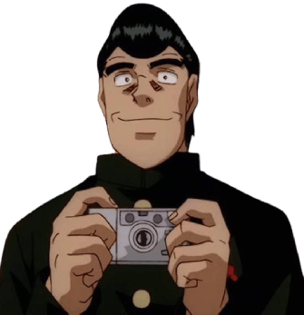

Es uno de los amigos de Ippo, que trabaja en el alquiler de botes de pesca Makunouchi junto con la madre de Ippo. Siempre fue a ver sus peleas(excepto la primera), desde que estaba en preparatoria. Antes de la llegada de Ippo al gimnasio, él le había dado una paliza, que habría sido detenida por Takamura. Aunque no es boxeador, se considera entre los personajes secundarios más importantes de la serie. Actualmente ya no trabaja en la tienda de pesca y dibuja manga, habiendo cambiado su idea original de hacerlo de boxeo por hacer uno de pesca, el cual ganó un concurso.